01
Частный мастер
Больше свободного пространства на рабочем столе
Настройка положения вытяжки под посадку и рабочую зону
Вытяжка и встроенное освещение в одной системе
MarkWell MW One
02 Устройство
Основные элементы вытяжки объединены в головной части. Фильтр расположен у рабочей зоны и легко снимается для обслуживания. Он задерживает пыль до того, как воздушный поток достигает двигателя, исключая загрязнение его лопастей и помогая сохранять рабочий ресурс двигателя.
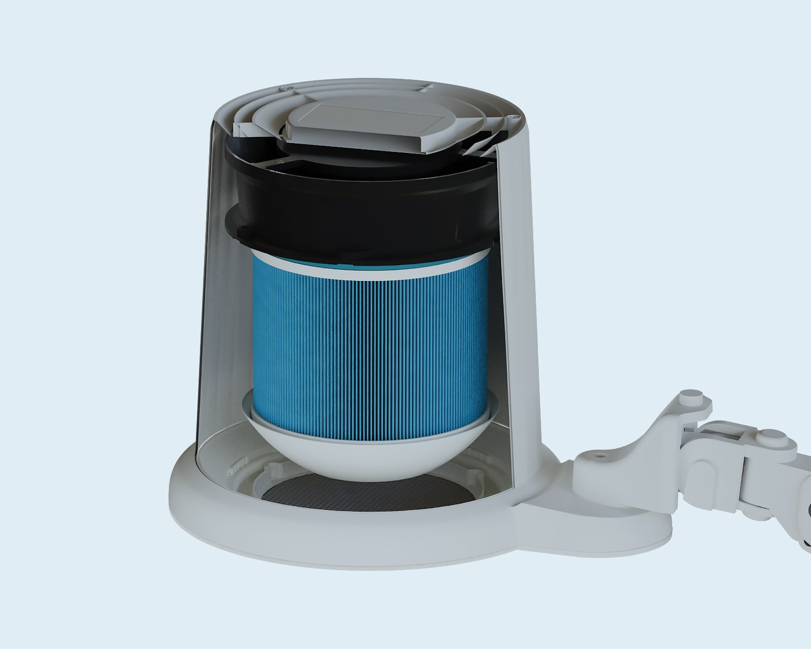
Техническое решение MarkWell MW One защищено патентом на изобретение.
№2800505
03 MW One в реальной работе
Как MW One выглядит в ежедневной работе? Ниже — видео мастеров, которые уже используют вытяжку на своих рабочих местах.
04 Мощность
Двигатель развивает до 4700 оборотов в минуту и работает вместе с 10-уровневой системой регулировки мощности.
05 10 уровней мощности
Поворотом шайбы можно выбрать нужный режим мощности, а установленный уровень отображается на цифровом дисплее.
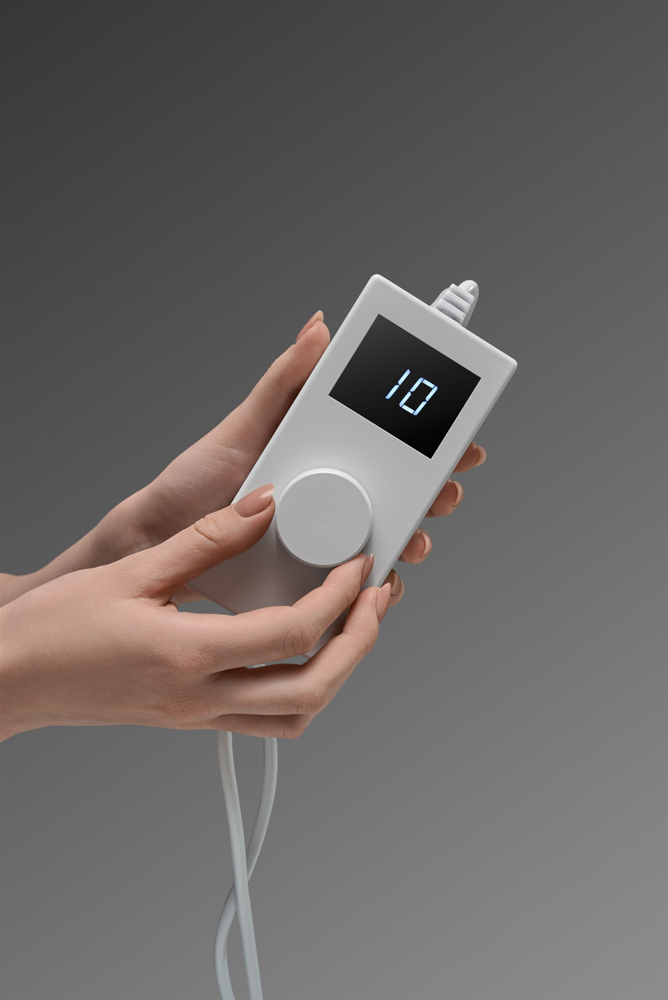
06 Магнитная фиксация фильтра
Фильтр фиксируется магнитами внутри головной части. Его легко снять и установить обратно без разборки корпуса.
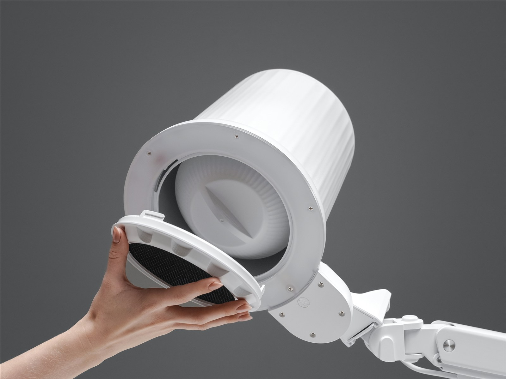
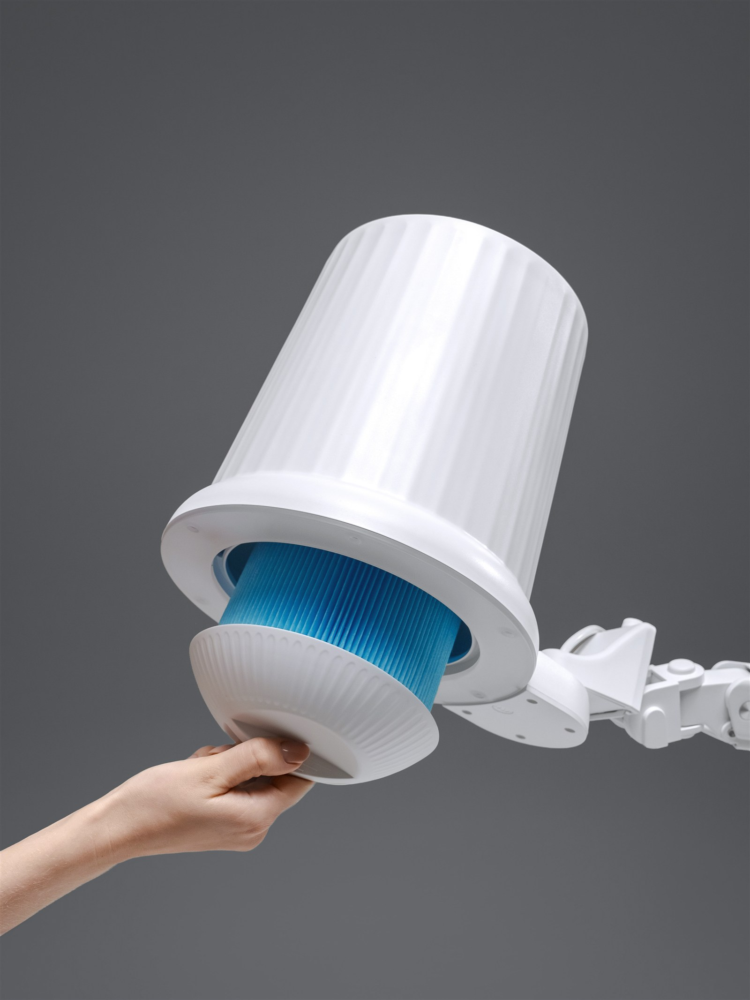
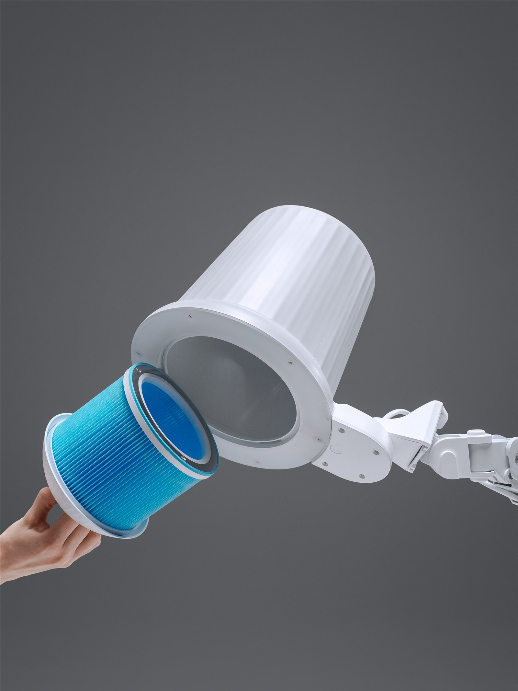
07 Встроенный свет
Освещение встроено непосредственно в головную часть. Доступны три цветовые температуры — 3000, 4500 и 6000 К — и регулировка яркости. Мощность освещения — 38 Вт.
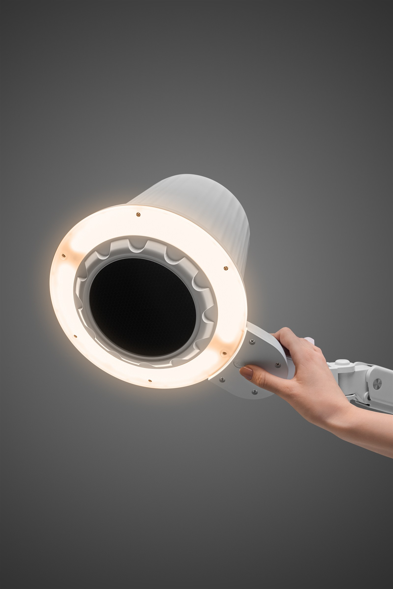
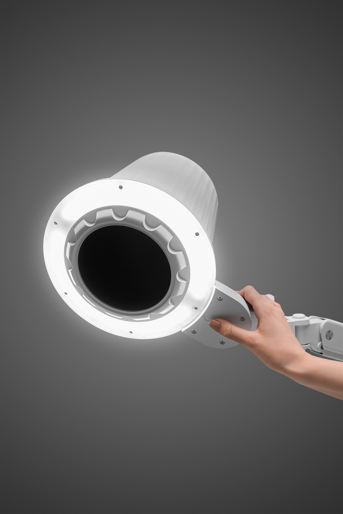
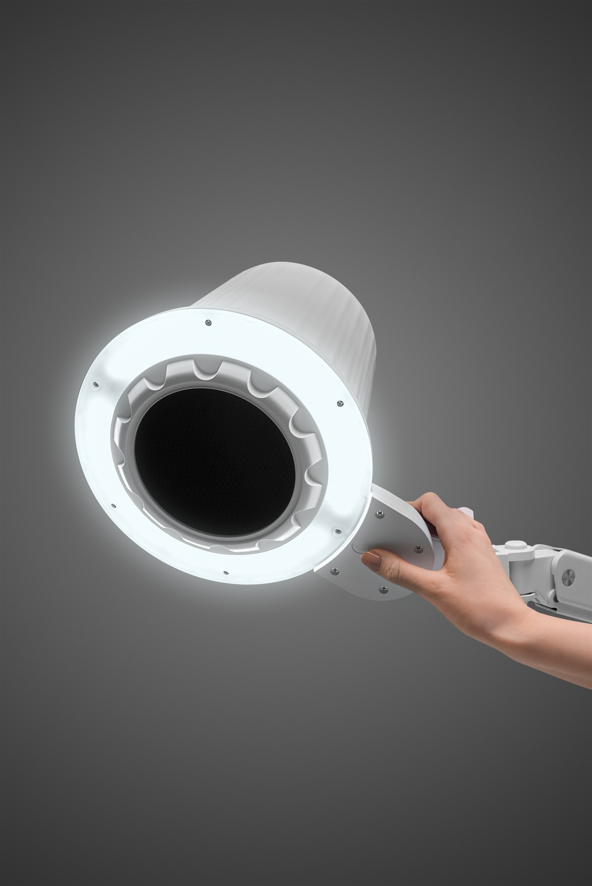
08 Кронштейн
Вытяжка устанавливается на край столешницы или тумбы при помощи струбцины и регулируемого кронштейна. Головную часть можно позиционировать над рабочей зоной, оставляя поверхность стола свободнее для инструментов и работы мастера.
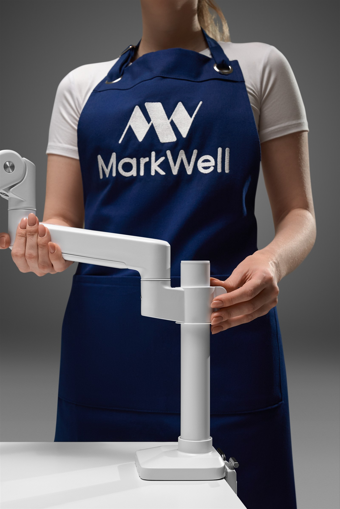
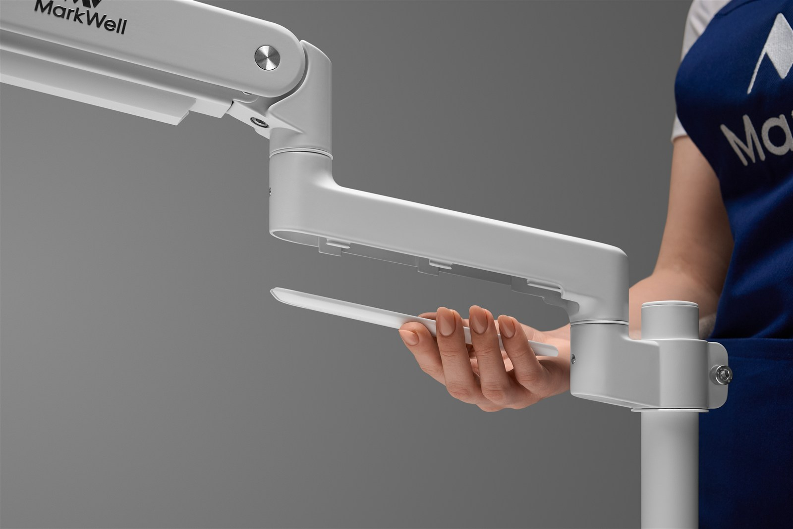
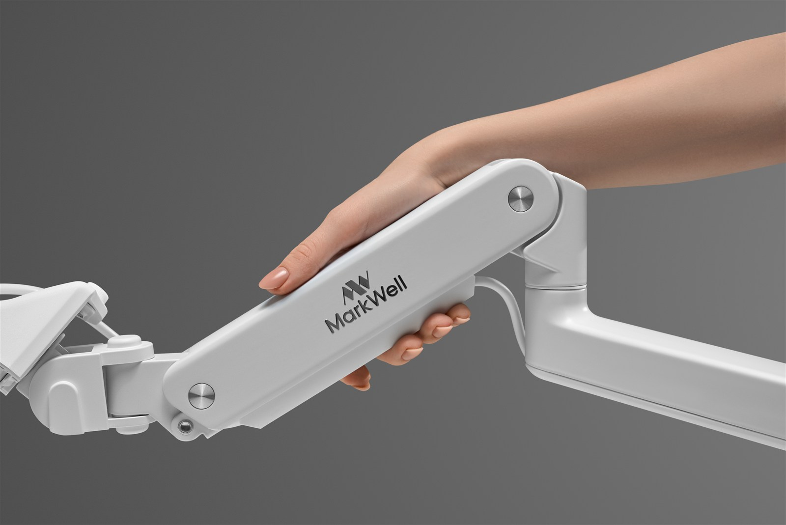
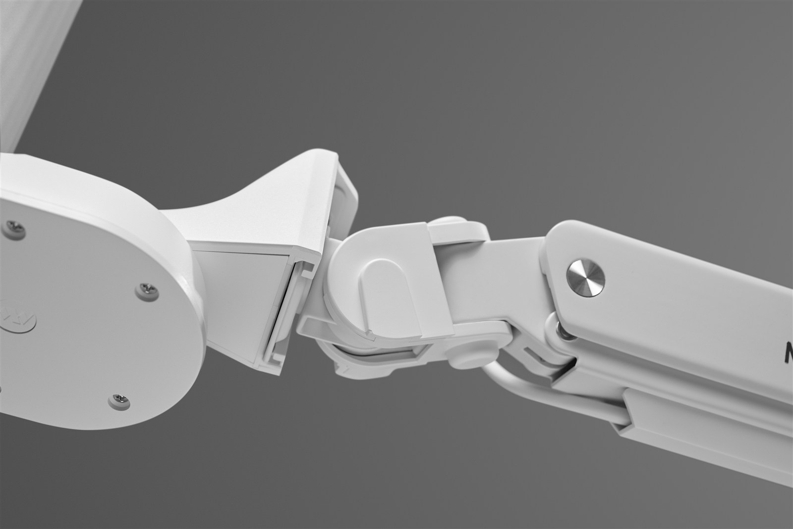
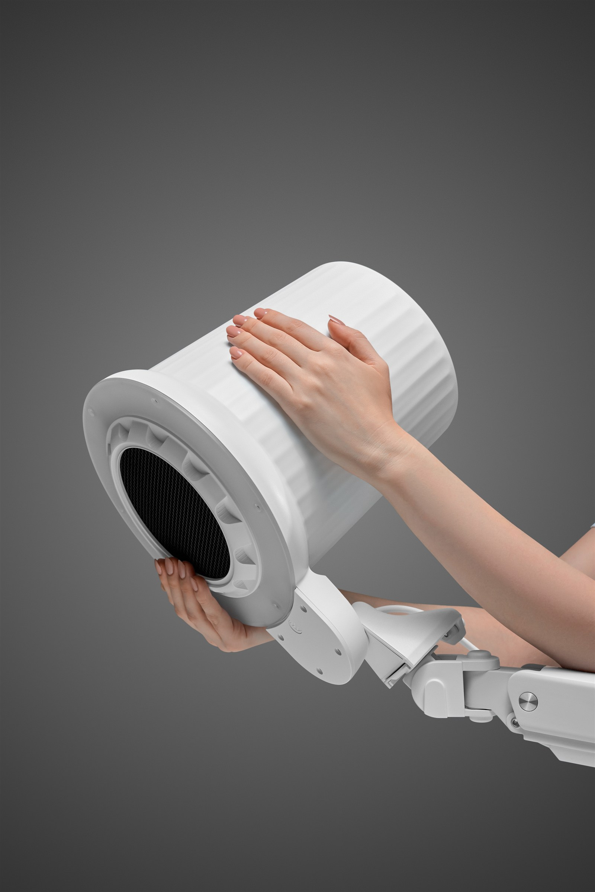
09 Кому подходит
01
Больше свободного пространства на рабочем столе
Настройка положения вытяжки под посадку и рабочую зону
Вытяжка и встроенное освещение в одной системе
02
Более цельный и эстетичный вид рабочего места
Регулируемая конструкция для разных мастеров и рабочих мест
Единый подход к оснащению нескольких рабочих зон
10 Линейка MarkWell

Основная вытяжка с регулируемым кронштейном и встроенным светом.
Характеристики
Расходный элемент для регулярного обслуживания.
Характеристики
Мобильное основание для совместимого оборудования MarkWell.
Характеристики